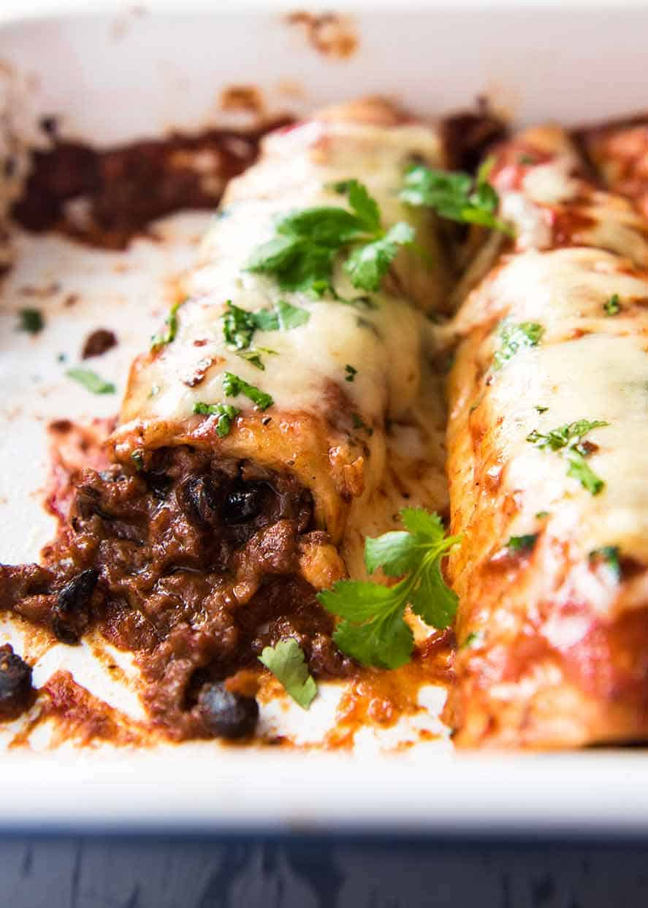

Beef Enchiladas

Beef Enchiladas with an extra tasty, saucy filling, smothered with a homemade Enchilada Sauce. My time saving trick is to use one base Enchilada spice mix for both the sauce and filling!
Ingredients
- Refried beans
- Black beans
- Homemade Enchilada Sauce
- Beef
Instructions
-
Toast spices:Toast spices in a small skillet over medium heat (no oil) for 2 minutes or until the spices smell fragrant. The purpose of this step is to bring out the flavour.
As soon as they are toasted, immediately transfer seeds into Nutribullet, a small food processor OR into a tall jug that fits a stick blender. Don’t leave them sitting around in the skillet – the residual heat will burn those tiny little seeds!
-
Curry paste:Add remaining Curry Paste ingredients in the Nutribullet (or blitzing appliance of choice).
-
Blitz: until smooth. It doesn’t need to be 100% smooth like when making curry pastes because any chunks get cooked when it fries. But nor do you want big chunks. Aim for just pretty smooth – a bit of graininess when rubbed between your fingers is ok.
-
Marinate: Pour Curry Paste over chicken in a ziplock bag, toss to coat, then marinate for 24 hours in the fridge, up to 48 hours. Any longer than this doesn’t add any more flavour, and I’d start to be concerned about compromising the freshness of the chicken.
-
Cornflour / cornstarch: Next, we toss the chicken in cornflour / cornstarch. It mixes into the marinade paste to make it thicker and stick to the chicken which fries up into a delicious craggy crust.
Cornflour works better than wheat flour because it fries up crisper. A little fried food trivia for your day!
-
Fry: in oil preheated to 180°C/350°F for 8 minutes (wings for 5 minutes), or until deep golden brown and internal temperature at thickest part is 75°C / 167°F.
I use vegetable or canola oil for frying. But any neutral oil will work fine here, even a light olive oil.
For the frying vessel, I like to use my heavy-based cast iron pot (Dutch oven) which retains and distributes heat evenly. I also feel it’s safer because it’s deep and it’s heavy so it’s unlike to move on the stove.